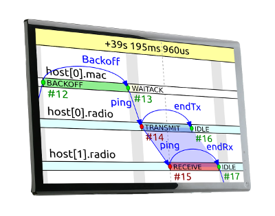
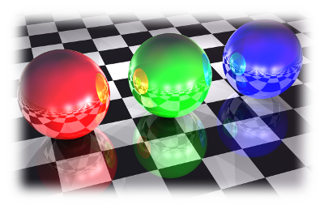

OMNEST simulation models are built from reusable, self-contained components, assembled using a domain-specific language. Components provide a natural organization for your code, facilitate code reuse, and also help you choose the appropriate abstraction level by allowing you to replace any component with more detailed or less detailed versions.
OMNEST offers tools for all stages of a simulation project: developing C++ code, assembling, configuring and running simulation models, and analyzing results. The IDE provides modern C++ editing with refactoring capabilities, a dual-mode (graphical/source) editor for networks and topology, a smart configuration editor, and much more.
The OMNEST graphical simulation runtime user interface integrates with the C++ debugger to form an integrated environment. You can easily switch between high-level (simulation) and low-level (C++) debugging, allowing you to effectively track down problems.

You can configure simulations to record a detailed history and visualize it on an interactive sequence chart in the OMNEST IDE. The chart includes events, messages sent between components, C++ method calls across components, etc. This tool can be invaluable in tracking down model errors and showcasing and documenting model operation.

The OMNEST runtime user interface enables you to create 3D animations for your simulation model using the widely used OpenSceneGraph library. Maps, terrain, buildings, vehicles, signals, annotations, and many other features can be used to enhance the visualization of your simulation.